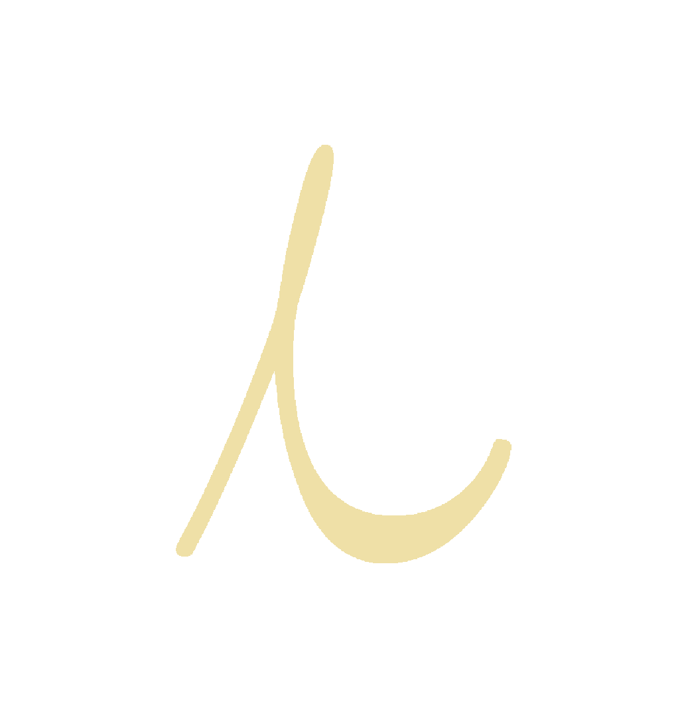

iGod Neuroverse Collective → Designed & Coded by G.Bennett. iGod Collective is a sieve of my work at "The Omni Automobil" and beyond.
Mantra: The cosmos can be likened to malleable ai fabric which we can mold with our might. We're all powerful Gods.